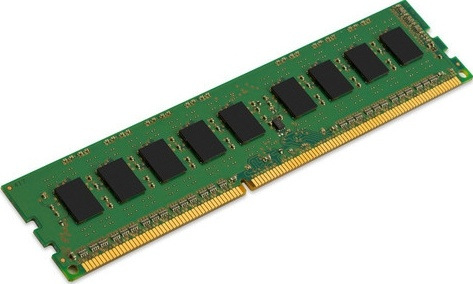

Aby tento typ paměti uchovával data, musí mít přísun energie. Když se napájení vypne nebo vypadne, všechna data se ztratí. Proto se používají jako krátkodobé úložiště dat. Hlavně operační paměti a RAM.
Operační paměť
Je paměť umožňující čtení i zápis dat a je mnohem rychlejší než dlouhodobá paměť. Aby byl běh počítače rychlejší, nahrává si na operační paměť data, se kterými právě pracuje. Minimální potřeba operační paměti je 4 GB, standartní je 8 GB a pro náročnější grafickou práci je doporučeno 16 GB a více.
RAM
Paměť RAM neboli Random Access Memory, umožňuje data číst a zapisovat. Její jméno znamená, že může ihned přistoupit k jakýmkoliv datům. Jsou používány jako operační paměti. Slouží tedy k ukládání dat, se kterými počítač právě pracuje. Data, které chceme uchovat i po vypnutí počítače, musí být uloženy třeba na pevný disk.

Cache
Paměť Cache slouží pro rychlejší běh počítače. Je velmi rychlá, ale má menší kapacitu. Jelikož procesor je velmi rychlý oproti operační paměti, když si chce načíst jakákoliv data z paměti, musí dlouho čekat. A proto si procesor ukládá často používaná data do paměti cache, odkud si je může rychleji načíst, a tak i zrychluje celý chod počítače.
Vnitřní paměť
Vnitřní paměť neboli primární paměť je paměť, ke které má procesor přímý přístup. Vnitřní paměť je většinou volatilní a po vypnutí počítače se její data ztrácí. Používá se jako paměť pro ukládání dat, se kterými počítač právě pracuje.